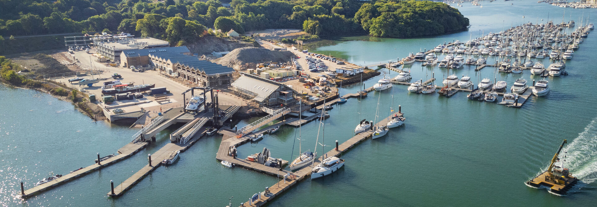

Civil andStructuralEngineering.
CASE Consultants
Torquay, Devon
Established 1988
The practice01 — CASE Consultants
Buildings &
infrastructure.
Civil and structural engineers,
based in Torquay since 1988.
We provide design and detailing for new buildings, existing structures and temporary works.
Our experience covers commercial and public-sector construction, marine and railway infrastructure, domestic projects, surveys and repairs.
About CASEDesign. Detailing. Assessment.
Our engineering servicesSelected work02 — Project experience
Our projects.
Buildings and coastal infrastructure.
Explore the work and CASE’s role.

Engineering in detail · Haven Banks
A constrained
waterfront site.
Steel frames and piled foundations for an outdoor education centre beside Exeter’s historic canal basin.
Explore the project Civil & structural engineering · Exeter · 2013
Civil & structural engineering · Exeter · 2013Our services03 — Engineering
Design &
technical advice.
For new construction, existing structures
and the works needed to build them.
Contact the practice04 — Torquay, Devon
Discuss
your project.
Send a brief, drawings or photographs.
Talk to us about the engineering you need.